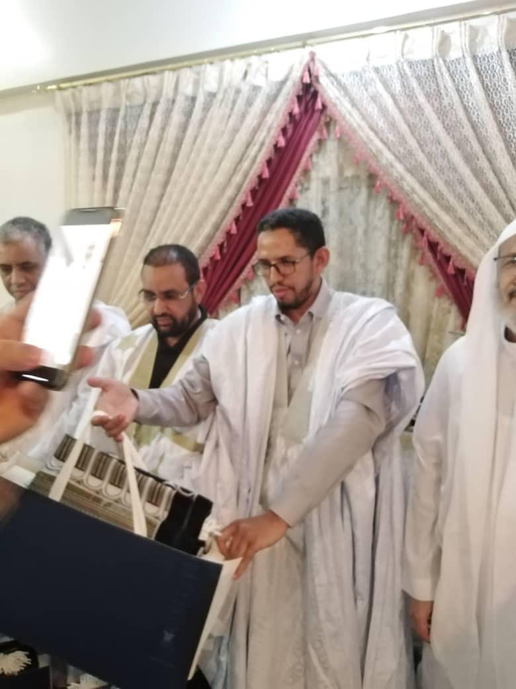

Professional Experience
2019 – 2024
Deputy Consul General
Consulate General of Mauritania, Jeddah, KSA
Senior diplomat supervising civil status services and secure identification document issuance. Expert in biometrics systems integration.
Previous Years
State Engineer
Information Technology & Telecommunications
Design and maintenance of robust network infrastructures. Specialized in Cisco systems and biometric data management.
Technical Skills
- Biometric Identification & Security
- Cisco Networking & Infrastructure
- Effective Communication
- Meeting Management & Leadership
Honors & Awards

Awarded for excellence in diplomatic and technical service.
صَدقة جارية
جمال الدين سيدينا و فاطمة بنت سيدي حمود
رحمهما الله وأسكنهما فسيح جناته